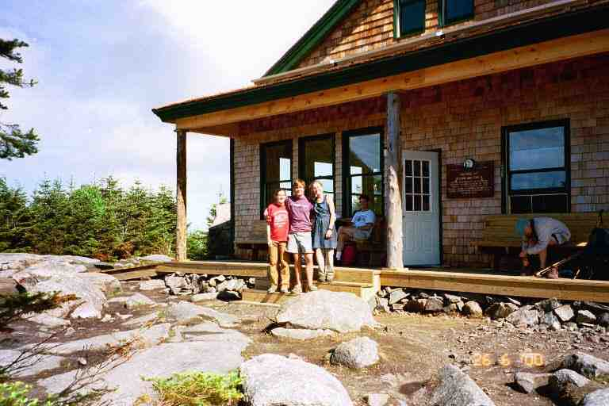

We awoke to a foggy morning at Liberty Spring Campsite on June 24, our fifth day on the trail. We performed our morning routine before starting out.
Most mornings were the same, with a little variation depending on whether we were in our tent or a shelter. The routine included toilet and hygiene, getting dressed, packing up everything in the tent, emptying the tent, taking down the tent, packing our bags, filtering water, putting aside the snacks for the day and having breakfast.
The packing process was actually two steps. Everything in the tent was gathered up: clothes were put in their plastic bags to keep dry; small objects like flashlights, camera, maps, knife, glasses, books, toilet bags, etc. , were placed in the lids from our packs; sleeping bags were stuffed into their sacs which were lined with plastic bags to keep them dry; sleeping pads were rolled up with the valve open to remove air and placed in their sacs. I then stuffed the tent in the bottom compartment of my back pack with my sleeping bag and my pack rain cover and then I stuffed the fly in MA's pack with her sleeping bag and pack cover. We then loaded the rest of the stuff into our packs, trying to keep rain gear, fleece, and snacks within easy reach. I also tried to keep the water filter near the top. On top of everything we placed our water bags, with the drinking tubes leading down to the front of the bag where it was attached. We then re-attached the pack lids and tightened all the straps.
When we planned this trip, we decided not to cook breakfast again this year, in fact we only wanted to take our stove out for the evening meals. We tried to get some protein for breakfast rather than the empty calories of pastries. We filled our two-cup meal mugs with Honey Nut Cheerios, powdered milk and a package of Instant Breakfast, and then added water. It tasted pretty good and gave us energy.
******************
We started this day by completing our climb up Liberty Mountain. It was the same stair-like rocky ascent as the previous day but we were fresh and it only took us 20 minutes to do the 0.3 miles up the last 500 feet of the hill to the ridge. At the top, the AT made a sharp left to follow the ridge, while a trail to the right lead to the summit. We were now at the 4200 foot level. The first 1.5 miles of trail along Franconia Ridge was relatively flat and in the woods so that we did not get many views. The ridgeline was likely no more than 50 feet wide, and often less.
We saw a number of short paths through the trees and surmised that they lead to stealth camping spots that we had heard were along here. There were fines for camping in non designated areas in the Whites, but there were few wardens, and they left the mountains before dark, so that setting up a tent just before dark would generally be safe. Apparently, the wardens were also lenient if tents were set up in such a way as not to harm the environment and if there was an excuse about being caught by the weather or darkness, etc. A hiker's attitude affected the warden's attitude.
The trail continued along Franconia Ridge and started climbing out of the woods and up Little Haystack Mountain. We came to a sign advising that we were entering an alpine zone and that we should try to stay on the trail as the plants were fragile. We went through an area of short alpine vegetation that quickly gave way to lichen as we approached the 4800 foot peak. (The attached picture is PA looking back at MT Liberty.) A further 1 mile along the narrow ridge brought us to the 5100 foot summit of Mount Lincoln and another 1 mile, brought us to the 5300 foot summit of Mount Lafayette. At one stop, we relaxed and looked across Franconia Notch to mounts Kinsman and Cannon at the end of the Kinsman Range. Just before reaching the peak of Mount Lafayette, we came to a sign post for Greenleaf Hut located 1.1 miles away on a side trail. We could clearly see the hut, fully exposed to the elements, on a ridgeline which branched off this ridge.
The attached picture of MA walking up Mount Lincoln shows the terrain that we were going through on top of these mountains. Notice the narrow backbone of the mountain that we had come along. The weather was clear and the views were spectacular. In 1999, SINGLEMALT said: *** " Franconia Ridge is a ridge trail, which varies from 4 to 50 ft. wide, the mountains falling off sharply on either side. It is kind of like walking along the ridge of a roof." *** JILEBI said: *** "An absolutely crystal clear day which made our hike over Franconia ridge spectacular. The alpine vegetation gave way to sage green lichen covered rocks and we walked from mountain peak to peak with endless views of the neighboring mountains, and a few rigid gliders swooping in the air currents. "***
As we approached Lafayette, we could see a number of day hikers and section hikers as little dots in the distance ahead of us. Many had come here up one of the side trails or had taken a day hike from Greenleaf hut. On our way up Lafayette, we met MARLBORO MAN, a young section hiker who began in Stratton VT and was on his way to Katahdin. There were a number of people on top of Lafayette when we stopped for a break. As we were having our bagel and peanut butter lunch, we were approached by a man who introduced himself as STICKMAN, a successful 1998 thru-hiker. We exchanged a few trail stories, and talked about THE FAMILY who he knew very well. We took the two bagels he offered but told him what we really needed was someone to take our garbage out (empty food packages, candy wrappers, etc.). He gladly obliged.
From Lafayette, we looked across a wooded depression to Mount Garfield, whose summit was nearly 4 miles further along the AT. Garfield was mostly tree covered as it was at least 800 feet lower. Our destination was the Garfield Ridge Campsite on the other side of Garfield, about 0.5 miles past the summit. From our vantage point, the woods gave a rounded look to the terrain ahead for the rest of the day's hiking, but a glance at the profile map indicated that we had some very steep ascents and descents.
To get off the summit, we had to go over large, flat, exposed, sloping boulders, and then found ourselves on a rocky path heading into the woods. We dropped down 2000 feet in less than 2 miles and it was slow going. We went up a little bump and down a short steep section where we met three young Quebecois out for the weekend. They were stopped having a break and the girl in the group was eating something right out of a can. They seemed to be having a good time, but their use of cans made we wonder about their abilities. We were surprised to hear that they were heading for Liberty Campsite that night. We hoped they would make it. In the Whites one must plan very carefully in order to stay safe. In August 1999, a thru hiker helped carry the body of a hiker off Mount Garfield. The weekend hiker had refused to listen to advice from the Garfield Campsite caretaker and had ventured out in bad weather.
We soon began the one mile climb of Mount Garfield, the last section of which was very steep. As we approached the top on the wooded trail, we noticed the access to the summit of the mountain to our right. The summit consisted in the remnants of the foundation of a tower, on top of layers of flat boulders. We climbed up on the rocks, took a break and talked with a number of hikers. We met a light packing thru hiker who had started on March 5. He was aptly named SPEED RACER.
It was only 0.4 miles down to the Campsite but it was a slow treacherous descent. We were passed by a number of thru hiking friends of SPEED RACER, and some weekenders. It was past 4 p.m. on a Saturday afternoon, and I started to wonder if there would be space at the campsite. I went on ahead and eventually came to a stream at the junction of the campsite trail, where the thru hikers were filtering water. They would not be staying but would be continuing on, trying to catch SPEED RACER. We were nearly out of water, but I wanted a campsite, so I asked them to tell MA that I had gone up to the campsite.
I don't know if it was somebody's idea of a joke but the side trail to the campsite is at least 0.2 miles long and goes right back up the hill. It was a steep climb which lead to a boardwalk where I found the Caretaker's tent platform. He told me the tent platforms were all taken but said he would find me an overflow spot. He lead me through a clearing with a shelter and then down some steps to the camping area, where he moved aside some dead branches to give me access to a large flat area under a high canopy of trees. I left my pack and took my filter and dromedary bag to get water. I met MA on the way down. When I came back she was waiting for me in front of the caretaker's tent.
We were tired and hungry that night so I immediately prepared packages of Ramen noodles using a little more water than suggested so that we had a hot liquid to sip and help us relax. I then made two Lipton sauce and rice packages and added some summer sausage that we were carrying, as well as a few chunks of the bread from Lonesome Lake Hut. We chewed on a few pieces of the sausage while supper absorbed the water. Lipton's were our usual suppers; we had brought an assortment of rice dishes and pasta dishes, enough for two per meal for 6 days.
The caretaker escorted a young female NOBO thru hiker to a spot nearby. She was hiking with her dog and she looked very fit. MARLBORO MAN said that she was extremely fast. It had taken us 8.5 hours to cover 7.7 miles of this beautiful rugged mountain terrain. We still did not have our hiking legs yet so we quickly did our evening chores and retired early.
We slept-in the next morning and saw MARLBORO MAN leaving as we were packing. We did not leave camp until 8 a.m. and we stopped at the stream for water before hitting the trail. The first thing we had to do that morning was come down the rest of Mount Garfield. The descent was almost exactly as shown on the profile map: straight down. It was a little more than 0.25 miles to the base of the mountain but it was really slow going. We had to go down a number of rock faces where we went down with our bodies facing the rock, searching for indentations and cracks with our boots and grabbing on to protruding rocks or hanging on to trees at the edge of the trail.
We were soon joined in our descent by MARLBORO MAN who explained that he had gone the wrong way when he had got on the trail, and had to double back. He negotiated a lot of this area on his bum. I found a photo in SINGLEMALT's journal showing STITCHES and GENTLEMAN JIM going down this section in 1999. A picture is certainly worth a thousand words.
The trail levelled off at the 3500 foot level at the base of Garfield, and we followed the rocky trail along the side of a mountain through a lush green section of trail. Our goal for the day was Zealand Falls Hut, a distance of 9.7 miles and we would only have one mountain to cross. So far, however, we had only made one of our scheduled stops (the first day). If we got to Zealand that night, we would be 2 days behind after only 6 days of hiking. This situation was made clear that morning when we met a father and son SOBO thru hiking team who were called BALD EAGLE and FLAMING FOOT (tried to put out a campfire with his feet). They told us that STITCHES had been waiting for us at Zealand Falls hut the previous day (Saturday). She was using the schedule that I had e-mailed to her and had been trying to meet up with us for the weekend.
Later that morning, MA developed muscle cramps in her legs and began feeling very tired. We could see Galehead hut in the woods on the side of a mountain, a mile or so ahead, and decided to rest up there. As we continued, it became clear that we were too tired to continue on. A while later, the trail went up a hilly section of woods and then veered left to keep climbing. At that spot, a side trail to the right lead us to Galehead. We arrived at the back of the building, and came around to the front where there was a long porch running along the front of this beautiful new hut situated in a clearing near the edge of the mountain. We left our packs on the porch, went through the dining room with its long tables and benches, and approached the kitchen area.
There was a young man working in the kitchen and I asked him about the possibility of staying the night as we were exhausted, even though it was not yet 11:30 in the morning. I was aware of the high cost of staying at the huts, ($62 each per night for a bunk and two meals), so I asked about the possibility of a "work-to-stay", or some other arrangement where we would just pay for a bunk.
He explained that the work-to-stay was only available to thru hikers and that technically we were section hikers. He said that all but two bunks were reserved for that night and that we could have them. If no thru hikers showed up, we could work to stay, which meant doing a couple of hours work in the morning in exchange for the bunk and meals with the croo after the guests had eaten. If we decided not to work to stay, or if thru hikers showed up, we could have the bunks for $25 each, including meals with the croo. We thanked him and agreed.
We paid $1 and grabbed cake and bread from the left-over bin and had glasses of Jungle juice from a large dispenser ($0.50). A young girl, a member of the croo, arrived through the kitchen door carrying a wooden frame on her back with two boxes strapped to it. The boxes contained fresh foods for the kitchen. When the croo returned from days off, they were required to carry up provisions. The croo consisted of Will, Sierra, Kate and Sarah.
*****************
*** "The AMC gets a lot of flak because they charge around $60.00 a night, and there are no showers or other facilities. There are those that claim AMC stands for "Appalachian Money Collectors", which I think is unfair. You have to remember that there are no roads to these huts, and all food, trash, etc., has to be packed in and out on 80-90 pound backboards over miles of rough trail. Propane tanks, and hauls of human waste have to be taken out by helicopter. It's an expensive, and very labor-intensive operation. Some huts are now experimenting with solar powered composting toilets to try to eliminate having to handle drums of waste. With each hut handling from 30 to 90 guests, depending on size, this waste builds up quickly. Hikers may request to work for stay, which involves doing dishes or some other task for 2 hours in exchange for meals and a bunk." ***
***************
We then went through a door off the dining room into a corridor with a number of bunk rooms on each side. The bunks were three high and there were about 5 per room. There were three flannel blankets per bed, and we made up beds for ourselves. We hung some wet items along the window sill and went out and left socks on the bench on the porch. We closed the door to our bunk room and slept most of the afternoon, awaking once in a while to the sounds of people in the corridor and when a group came into our room. Late in the afternoon the winds picked up and we were hit with a heavy rain storm, forcing us to close the window.
We lounged around the dining room, talking to guests, looking at the books in the little library and reading entries in the 1999 trail register. The place was filling up. Some of the people had just hiked up for the night, others were in the Whites for a few days, going from hut to hut. Most only had light packs because there was no need for sleeping bags and tents, and the meals were provided. As a result, there were a couple of family groups here with young children. Just before the storm let up, a couple of hikers in ponchos arrived drenched and exhausted (Eric and Ryan).
One of the persons we met during our stay was a lady in her late forties who was "peak bagging", a practice whereby people hike to the summit of each of the 48 mountains in New Hampshire that are over 4000 feet. In this trip she was doing South Twin and Guyot. She had about 5 left to do. As supper time approached we retired back to our bunks to get out of the way. We talked with a group of men in our bunk room who had management roles with a company in Boston. I guess it was some kind of bonding thing. They were also taking pictures for a newsletter. One of them (Anthony) agreed to send a message to Tasha to let her know that we were 3 days behind schedule but that everything was going fine.
During the meal, Will came to see us and told us that we could have the work-to-stay if we wanted it. We thought it over and decided it would be worth working a few hours in the morning if we saved $25 each. After the guests had all eaten, and most of the dishes were done, MA and I went into the kitchen and ate with the croo.
All the remaining food was in pans and casseroles on the central kitchen counter and we helped ourselves. It was incredible. We had a great time talking and eating with these four wonderful young people. Will offered us one of the beers that he had brought up (we refused the generous offer). Will had prepared most of the food and was quite a cook. There was a fantastic Italian soup that he had made by grinding up left-over lasagna, and then adding cream and a number of spices. The guests had the choice of chicken in wine sauce or a delicious vegetarian rice and curry dish, but we got to try both. There was tons of food, and I pigged out. One of the guests later told MA that the food was really good but that it was too bad that there was only enough chicken for two pieces each. MA did not dare tell her that we had at least 4 pieces each.
We went out on the porch after supper and sat on the bench running along the front of the hut. We talked with a few guests and admired the setting sun that could be seen over the trees. I climbed on top of a large round boulder at the side of the hut, to get a better view.
We slept well that night. The 6:30 a.m. wake-up call was the croo singing in the corridor accompanied by Will on his guitar. At 7 a.m., MA and I sat out on the porch while the guests had breakfast. We were soon joined by others as they finished their meal. It was a lovely morning. As I strolled around in front of the hut, I found a sock in a muddy puddle. It was the sock liner I had lost the night before.
We packed our bags, then joined the croo for breakfast, which included cold pancakes and maple syrup. We were then assigned our chores which consisted of emptying the bottom kitchen shelves and washing all the items and the shelves with a bleach solution. During this time, Will was up in the loft trying to repair the toilet fan. The hut had indoor composting toilets, which were giving off an odour. After a little over an hour of work, the croo dismissed us. We purchased a few Cliff bars, said long goodbyes to the great croo and were off at about 9:30 a.m. Only a few guests remained at the hut when we left.

The map shows the climb up South Twin mountain from Galehead hut to be a steep 1000 foot rise over a distance of 1 mile, but we do not recall it as being too difficult, perhaps because of our break the day before and the nourishing hut food. I recall mostly a long stair-like climb up a narrow exposed field of small rocks, lined with small trees and shrubs. This slope continued on to a rocky alpine area with lichen covered rocks, where we got great views of where we had been and of Mount Washington ahead of us.
The trail then dropped down slightly into woods and we followed a rocky path under the trees for over 1 mile. Two hikers from the hut caught up to us. They seemed like business types in their thirties. One went on and the other one (Mark) hung back and talked with me as we walked. He knew I was Canadian, and wanted my assessment of ING bank. The bank was moving into the US and he was considering employment with them. I told him what I knew which was not much.
We soon came to the now familiar notes attached to trees announcing the beginning of an alpine zone and we began climbing mount Guyot, with its stands of Christmas tree sized evergreens, and we finally came to the exposed alpine area where the trail zigzagged through low vegetation up to the rocky summit. A side trail lead 0.7 miles down the hill to Guyot Campsite where there was a shelter and water. It was a hot day and our water supply was starting to get low but we figured we had enough to get us to Zealand Falls Hut, 4.2 miles away. The going was slow so we stopped for lunch on Guyot and enjoyed the view of towering mountains all around us.
The trail made a U-turn on top of Guyot and we headed downhill into a rugged wooded area where the trail hugged the side of the mountain. The trail would be flat and easy for a while and then would have us scrambling down rocky sections to the next level. Nothing too difficult but slow and tiring. We leap frogged Mark and his friend and two others, named Ryan and Eric.
About an hour after lunch, we met a couple going the other way. The young man wanted to know how far it was to Guyot as they needed water. I gave them the information and warned them that the water was far off the trail. They did not seem to be carrying much camping gear and they said they were on their way to Galehead hut, having left Zealand hut that morning. He acknowledged that the trail had been harder than they had anticipated. I wished them luck. They would need it because they were tired and it was going to be tough getting to Galehead, especially with the detour for water. Luckily for them, the days were long and the night time temperatures would likely not be too cold if they did not make it.
The trail was up and down until we began following Zealand Ridge, at which point we descended to Zeacliff where we stopped on an exposed rock outcropping to take a break and chat with Mark and his friend. The view from here was of U-shaped valley, deep ravines, and soft puffy mountains. We were soon joined by Eric and Ryan who both looked exhausted. Eric was not feeling well at all and thought perhaps it was heat exhaustion. He thought Gatorade would help. We carried powder with us so we added some to his bottle of water.
The trail then got very steep, dropping 1000 feet in 1 mile, then levelling off and finally dropping quickly until we came into the open at Zealand Falls. It was a brook which slid down the side of a mountain on flat rocks. The trail crossed the water at a level spot where the brook was confined to a few narrow crevices or flowed less than an inch deep over the flat slab of rock that covered this entire area. We had little problem picking a path across. We then followed the trail along side of the falls down to Zealand Falls hut, the whole time enviously watching groups of people playing in the brook and lounging on the rocks.
It was 4 p.m. and we were tired from our 7 mile day so we would try to stay here, but if that did not work out we would have something to eat, and then go on to Ethan Pond Campsite which seemed a flat 4.8 miles away. Apparently there were also a number of places nearby where we could stealth camp.
Zealand Falls hut is an old hut situated right on the AT next to the falls. We left our packs on the steps and went in to talk to the croo. We entered into a large room which consisted of the dining area closest to the entrance and a large kitchen at the far end. The bunk rooms on each side of the main room were accessed through doorways next to the entrance. We went to see the croo who were preparing dinner and explained the arrangement we had with the croo at Galehead. The girl who was hut master said that they had to play it by the book that night as the big boss was going to be there, but that there should be no problem as they would not be full that night. We went and chose bunks and then had to wait around until later to see if any thru hikers would arrive to get the work-to-stay. We had glasses of lemonade and some sweets from the Bakery basket.
We walked over to the falls and joined everyone there. The word "falls" does not accurately describe this section of stream. The water actually slides down slabs of rock which stretched far up the hill. We climbed up the gradual incline to find a spot for ourselves. All the way up the hill were groups of people rinsing clothes, splashing water on themselves and just lazing in the sun on the warm exposed slabs of rock. Our sandals had no problem gripping the bare rock but in a few places we had to be careful as we walked over areas where the water slid over the rocks. We also had to hop over crevices where water flowed or collected in pools. Shallow pools were also created in spots where the lower rock slabs stuck up a little higher than the bottom section of the slab above it. We found one such pool and rinsed out our shirts to try to get rid of the smell. This was the end of our seventh day and we had not bathed or done laundry in all that time. I sat in a shallow pool but was soon scrambling out of the ice cold water. We relaxed here for some time.
We returned to the hut and tried to find empty branches on the bushes out front to hang our wet things. We rested on our bunks while the guests had their meal. They were serenaded on the guitar by one of the guests who was quite a musician and singer. Each of the bunk rooms held 18 people in six 3-tier bunks. At the end of each bunk room, a door lead to a small room containing a composting toilet; the one in our room was for men and the one in the other room was for women. This was as a result of the good old days when the bunk rooms were also segregated by gender.
While waiting for the croo to do the dishes, we sat outside on the steps and talked with the big boss, a man in his forties who worked for the AMC and was responsible for the management of the huts. He told us we were lucky to be a little ahead of the thru hiking crowd so that we could take advantage of the work-to-stay. Obviously he had no problem with the fact that we were not thru hikers.
Supper was great, and included a delicious soup, salad and panzerotti. It was also nice to get a cup of coffee. We stood around talking with the staff while we ate. We pigged out again. Someone in the croo told us that STITCHES had spent quite a bit of time hanging around here on the weekend waiting for us, which was confirmed by an entry STITCHES had made in the register, telling us she would be stealth camping next to the trail, a short distance away. We then went out on the front step and talked with Ryan whose friend Eric was still not feeling well and had not had his supper. They had reservations at Mizpah hut the next day and had planned to get their via the AT (13.3 miles) but had now decided to stay here an extra day and the following day take a shorter trail down to the road at Crawford Notch to catch one of the AMC shuttles. The croo had radioed the office and made the necessary arrangements for them.
I really enjoyed the meandering conversation with Ryan. What an interesting young man. Ryan's fiancee was taking a law degree and was in Africa helping with a third world project. He and Eric had been friends for years and wanted to be screenwriters. They had completed one screenplay which had not been successful and were now working on another one. Since we got back home, we have received two e-mails from Ryan telling us about his progress. Things seem to be on track for realizing their dream.
We went to bed early and listened to the musician entertaining guests, telling stories and singing songs that he had composed. A very pleasant end to the day. The only down side of the night was the squeaky door to our bathroom and the comings and goings of the men in the other room coming to use our toilet and the women in our room going to use theirs. It rained during the night and I ran outside and brought our clothes off the bushes and onto chairs on the covered porch.
The next morning we sat outside while the guests had breakfast and then went and ate with the croo. Our work-to-stay was sweeping the bunks. We had to lift every mattress and sweep the box that they sat in with a brush and dustpan, and then fold the three blankets that went on each bed. It took us nearly 2 hours to do this for all 36 bunks and sweep the bunk room floors. We took our time getting ready as we had decided to just go to Ethan Pond today. Eric was feeling a little better and went out on the rocks near the falls to work on the screenplay with Ryan. I sat in the kitchen and talked with a young croo member named Jill who was responsible for tonight's meal. She was making bread as she talked to me. She had very little cooking experience but the croo had received a few courses and had recipes to follow, so she was not too worried. I marvelled at how she punched and kneaded the dough, adding flour and the contents from a pan once in a while as she worked. I asked about the content of the pan and she said she was making oatmeal bread by adding the rest of this morning's porridge.
At 10:45 we were on our way to Ethan Pond, an easy 4.5 miles away. One reason we were not going further was that the next place to stop after that was Mizpah hut a further 9.3 miles away, including one very serious steep climb. This short day would allow us to conserve our strength and get an early start the next day.
The first quarter mile was downhill with the stream visible through the trees to our right. The trail then split and it took us a second or two to figure the correct route. We made a 90 degree right turn onto a trail that was once a railroad bed. The walking was very easy on this wide rock-free trail which hugged the side of the mountain. We got glimpses of clandestine camping spots to our right, that STITCHES likely used..
While we were stopped for a break at the side of the trail, we were joined by GOOF, a NOBO who had started on March 18. He was quite talkative and told us about his light pack and equipment. He really believed in Capilene, a lightweight wicking clothing that did not get wet or absorb odour. He wore a T-shirt of that material and also had a long sleeve item in his pack. His hiking partner, PIGPEN, soon arrived but was much quieter. Their light packs allowed them to cover long distances, and they tried to get to roads every night to get to town. The pizza at the last town stop was bothering them, so I offered them Pepto tablets, which only GOOF accepted. They were then on their way.
Earlier in the morning, we had met the young man who was caretaker from Ethan Pond. He was on his way to Zealand. He suggested we stop to check out Thoreau Falls. It was going to be a short day so we took the short trail though the woods to the falls. Signs along the trail said no camping was allowed but there was lots of evidence that this shaded area with soft ground was used on a regular basis. The brook was very fast, winding its way downstream though crevices and around boulders, and rushing over flat rocks. We stood on a large rock to the right and watched the water tumble down the falls, and zigzag through the rocky terrain beyond. It would have been nice to explore a little upstream, and to find a pool to soak in, but we heard thunder nearby. The side trail was not too well marked and we made our way back to the AT mostly on instinct.
Eventually the AT left the railroad bed, and we found ourselves walking on a swampy trail, with very few puncheons. The ground underfoot was soft, dark and wet, with a few rocks sticking out where the foot traffic had caused erosion. It was difficult to find a dry place to stop for a break. The trail started to rise slowly and there were more and more sharp rocks sticking through, a possible problem for ankles. Around 1:45 p.m. we came to the side trail to the campsite. Stuck to a tree was a note for us from STITCHES. She had placed it there during the weekend, telling us that she was spending the night there.
The data book does not show the campsite as being off the AT, but the side trail was about 0.3 miles long. It seemed to be a newly cut trail. It started out as a narrow, rock strewn path and our packs rubbed against the small trees as we made our way down a slight grade. We came into the open next to Ethan Pond and went through wet terrain, rock hopping our way over a small stream flowing into the pond. A climb up a small hill brought us to the shelter where we found GOOF and PIGPEN taking a nap. They would soon be on their way again.
We took a trail to the left and set up our tent on a platform from where we could see the pond below us through the trees. It was a quiet uneventful stay at this fee campsite ($6 each). We had a neighbour on the next platform, and there was a person staying in the shelter. We relaxed and napped most of the afternoon and turned in early that night, in preparation for our assault on Mount Washington and the rest of the Presidential Range, over the next few days.